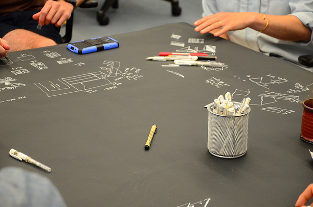
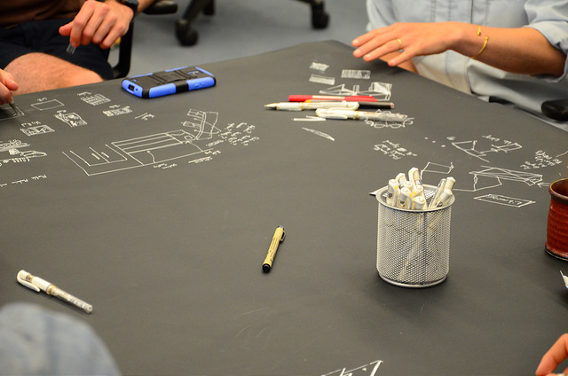

My First Design Process

Diving into Digital

Creating Spaces
After launching a focus on campus of improving spaces, I was invited along with six other students to be a part of the high-energy library development project called the Summer Design/Build. We produced several experiments every two weeks, relying on rapid, iterative prototyping to help us value various ideas. Over the course of the summer, I became much more comfortable jumping to building and letting my hands help me think through challenges. Working in a much larger team allowed for lots of peer review and I began to better appreciate how we could catalyze and energize the team during the tougher stretches of the summer.
 
